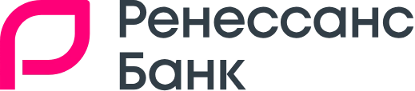
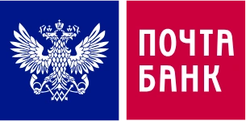
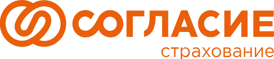

Ниша, где доверие важнее креатива, согласование — часть срока задачи, а в выдаче уже стоят агрегаторы. Мы работали с банками, страховыми и инвестиционными продуктами и знаем, какие решения здесь действительно дают результат.
Опыт работы с финансовыми компаниями



Специфика ниши, из которой складывается медиаплан.
Финтех — закрытая ниша с длинными согласованиями. Ценность подрядчика здесь не в списке работ, а в том, что он уже проходил эти сценарии.
За годы работы с финансовыми продуктами собрался «кузовок» решений, которые уже дали результат на других проектах. Мы не проверяем гипотезы за ваш счёт — сразу берём то, что сработало в нише.
Каждую задачу оцениваем в потенциальных визитах и лидах, а не в «пунктах чек-листа».
Знаем, как проходят согласования с продуктом, юристами и ИБ. Подстраиваемся под ваш релизный цикл, а не наоборот.
Автоматизируем выкатку новых страниц даже без доступа в админку: на стороне банка остаётся одна кнопка.
Микроразметку QAPage внедрили в первый месяц её появления — тогда она была лишь у пары банков и агрегатора.
Понимаем, что можно писать в финансовой тематике, а что нет. За счёт этого у нас мало итераций правок с банком и материалы быстрее доходят до публикации.
Чаще всего это связка SEO + GEO. Но ссылочное живёт и самостоятельно — так мы работаем на части финансовых проектов.
Вклады, карты, кредиты, ипотека, страхование, инвестиции — каждое направление ведётся как отдельный продукт со своей семантикой, структурой и прогнозом трафика.
Считаем долю бренда в ответах Алисы AI, Google AI Overview и нейросетей, сравниваем с конкурентами и системно наращиваем цитируемость.
Ссылочный профиль ведём и вместе с SEO, и отдельно — когда поисковой оптимизацией занимается ваша команда или другой подрядчик.
Первый артефакт работы — не аудит на 200 страниц, а понятный документ: что делаем, в каком порядке и сколько трафика это принесёт.
Обезличенная презентация: точки роста, дорожная карта, прогноз и KPI.
Список собран из реальных разборов банковских проектов — от фидов до новых форматов генеративной выдачи.
Расширенный YML-фид с параметрами продуктов повышает позиции внутри спецвыдачи и добавляет поток целевого трафика из сервисов.
Масштабирование структуры под узкие кластеры: виртуальные карты, региональные запросы, сегменты клиентов.
DepositAccount, LoanOrCredit, FinancialProduct, QAPage, BankOrCreditUnion — расширенные сниппеты и корректная передача условий продукта.
Часто по частотному кластеру ранжируется страница под смежный интент — это и потеря позиций, и отказы. Разводим страницы по намерениям.
Разметка заголовков, блоки похожих продуктов, облако тегов: вес перераспределяется, глубина просмотра растёт.
Товарные блоки, генеративные ответы, спецразделы — заходим в них, пока ниша ещё не насыщена конкурентами.
Устойчивый прирост позиций по продуктовым направлениям и одно из первых внедрений QAPage-разметки в нише.
Правки без релизов: корректировки страниц выкатывали через подготовленный файл, ресурсы разработки не расходовались.
Пересборка посадочных под интенты и перераспределение спроса между направлениями.
ПСБ — пример третьего направления: ведём только ссылочный профиль, SEO сайта остаётся на стороне клиента
Отчёт покажет долю бренда, разрыв с конкурентами и запросы, где можно быстрее нарастить присутствие. Цифры на макете — пример формата.